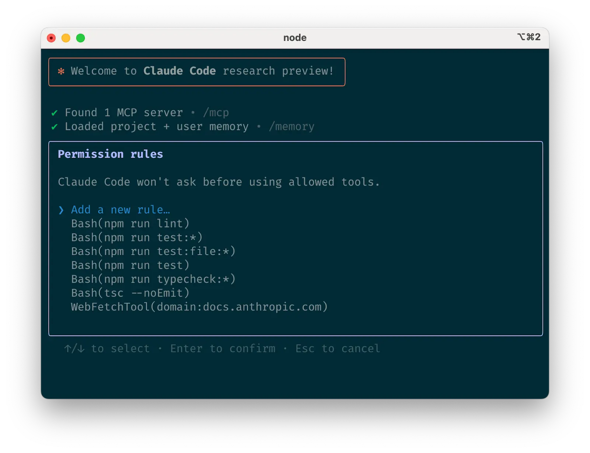
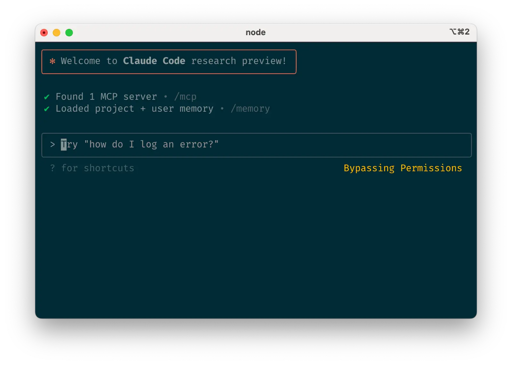
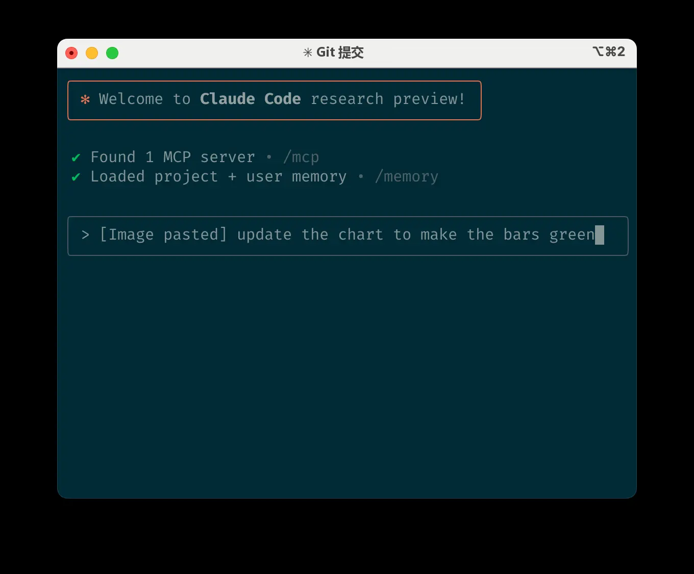
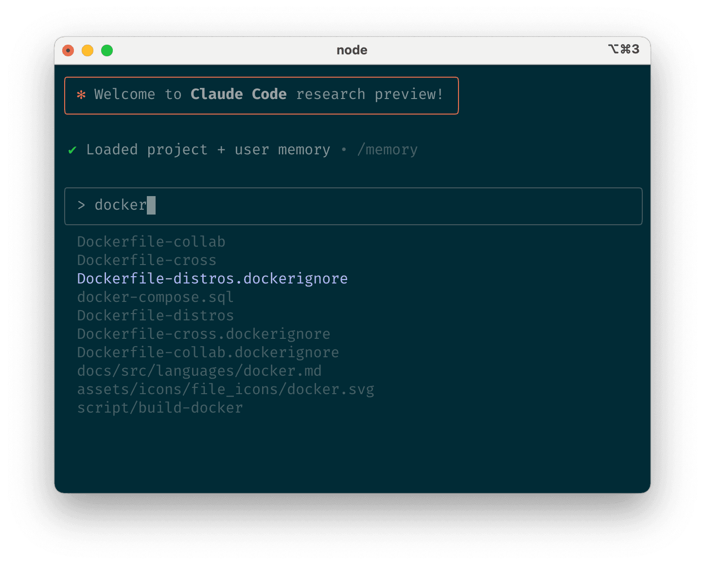
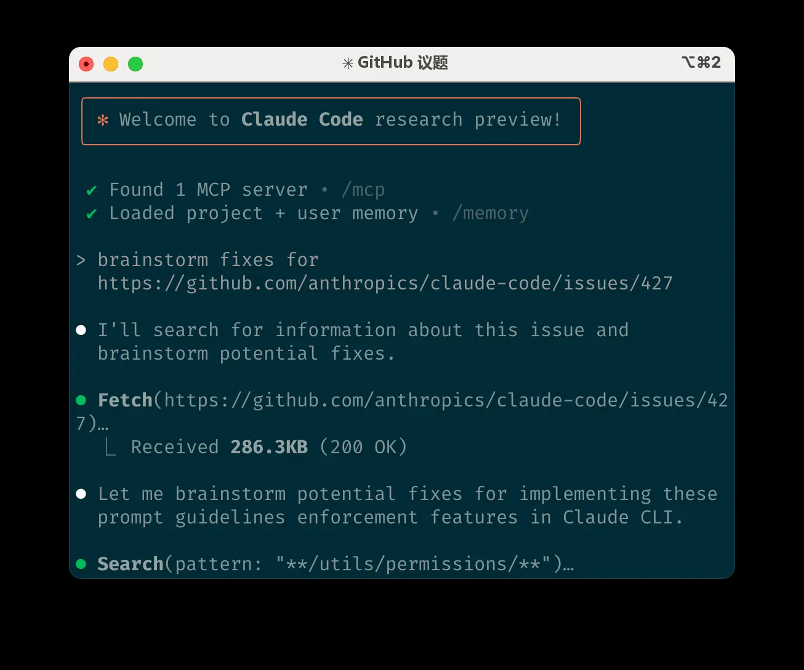
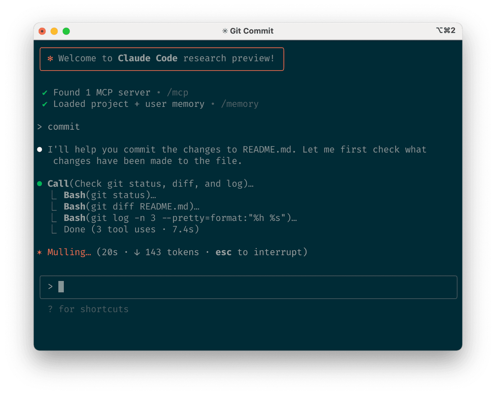
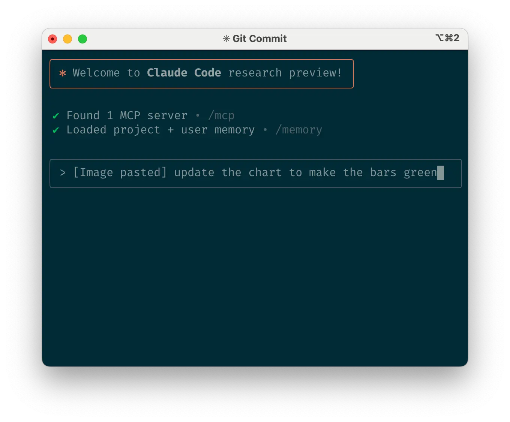
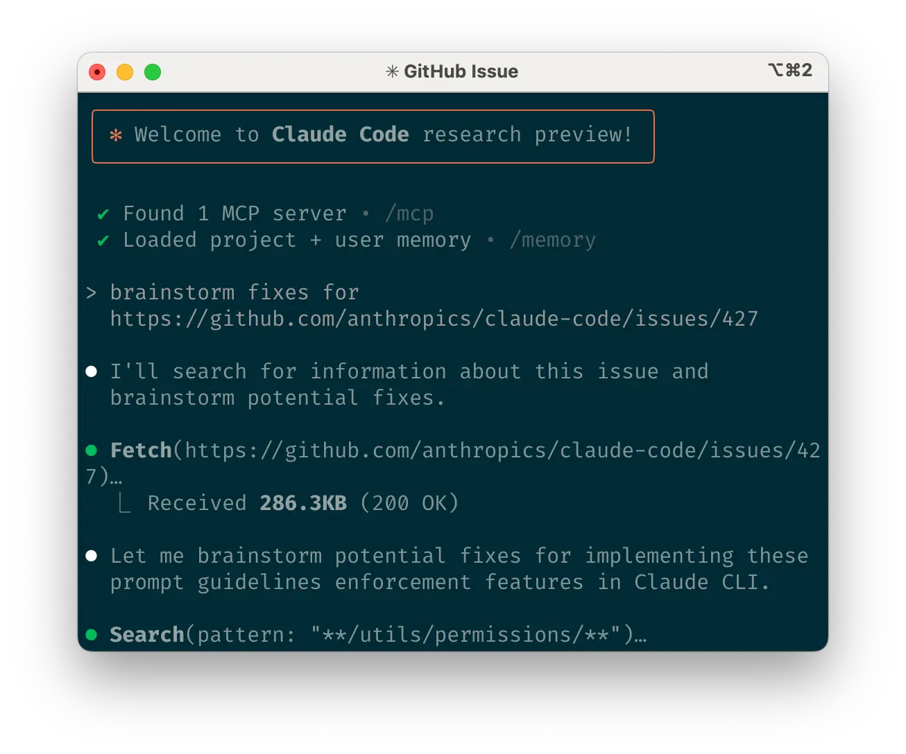

Claude Code：智能体编程最佳实践
📖 中文摘要
专业术语注解
CLAUDE.md：Claude Code启动时自动读入上下文的特殊文件，用于记录命令、风格与仓库规范允许工具列表：控制哪些文件写入、bash命令与MCP操作无需逐次请求许可的机制MCP服务器：为Claude Code接入外部工具与数据源的标准接口无头模式：用`-p`带提示词启动、供CI与脚本自动化使用的非交互运行方式git worktree：把同一仓库多个分支检出到不同目录、便于并行运行多个Claude会话的轻量方案📄 中文全文
- 类别： 工程（Engineering）
- 来源： https://www.anthropic.com/research/claude-code-best-practices
工程（Engineering） 2025 年 4 月 18 日 已发布 2025 年 4 月 18 日 团队 工程 主题
相关文章 * 特性 2026 年 2 月 23 日 Claude Code的诞生
阅读更多 * 2026 年 1 月 26 日
Claude Code最佳实践已迁移至文档
本博客文章已不再维护。有关最新的Claude Code最佳实践，请参阅官方文档（https://code.claude.com/docs/en/best-practices），它会随着Claude Code的演进持续更新。
我们最近发布了Claude Code，一款用于智能体编程的命令行工具。作为研究项目开发而来，Claude Code为Anthropic的工程师和研究人员提供了一种更原生的方式，把Claude融入他们的编码工作流。 Claude Code刻意设计得底层而无预设立场，提供接近原始的模型访问能力，不强制特定工作流。这一设计理念造就了一个灵活、可定制、可脚本化且安全的强力工具。虽然功能强大，但这种灵活性对初次接触智能体编程工具的工程师而言存在学习曲线——至少在他们摸索出自己的最佳实践之前是如此。 本文概述了一些被证明行之有效的通用模式，既适用于Anthropic内部团队，也适用于在各种代码库、语言和环境中使用Claude Code的外部工程师。这份清单里的每一条都不是一成不变或放之四海皆准的；请把这些建议当作起点。我们鼓励你亲自实验，找到最适合自己的做法！ 想要更详细的信息？我们详尽的文档在claude.ai/code 涵盖了本文提到的所有功能，并提供了更多示例、实现细节与进阶技巧。
1. 定制你的配置
Claude Code是一款会自动把上下文拉取进提示词的智能体编程助手。这种上下文收集会消耗时间与token，但你可以通过调整环境来优化它。
a. 创建 CLAUDE.md 文件
CLAUDE.md 是一个特殊文件，Claude在开始对话时会自动把它拉取进上下文。这使它成为记录以下内容的理想场所：
* 常用的bash命令
* 核心文件与工具函数
* 代码风格指南
* 测试说明
* 仓库使用规范（例如分支命名、合并还是变基等）
* 开发环境配置（例如pyenv的使用、哪些编译器可用）
* 项目特有的任何异常行为或警告
* 其他你希望Claude记住的信息
CLAUDE.md 文件没有必需的格式。我们建议保持简洁、便于人阅读。例如：
# Bash命令
- npm run build：构建项目
- npm run typecheck：运行类型检查器
# 代码风格
- 使用ES模块（import/export）语法，不要用CommonJS（require）
- 尽可能对导入使用解构（例如import { foo } from 'bar'）
# 工作流
- 完成一系列代码改动后，务必做类型检查
- 为性能考虑，优先运行单个测试，而非整个测试套件
你可以把 CLAUDE.md 文件放在多个位置：
* 仓库根目录，或你运行 claude 的任意位置（最常见的用法）。把它命名为 CLAUDE.md 并签入git，这样你就能跨会话、与团队共享（推荐做法）；或者命名为 CLAUDE.local.md 并加入 .gitignore
* 运行 claude 所在目录的任意父目录。这对单体仓库（monorepo）最有用：你可能从 root/foo 运行 claude，同时在 root/CLAUDE.md 和 root/foo/CLAUDE.md 都放有 CLAUDE.md 文件，这两份都会被自动拉取进上下文
* 运行 claude 所在目录的任意子目录。这与上面相反，此时Claude会在你处理子目录中的文件时按需拉取其中的 CLAUDE.md 文件
* 你的主目录（~/.claude/CLAUDE.md），它会对所有 claude 会话生效
当你运行 /init 命令时，Claude会自动为你生成一个 CLAUDE.md。
b. 调优 CLAUDE.md 文件
你的 CLAUDE.md 文件会成为Claude提示词的一部分，因此应像对待任何高频使用的提示词一样反复打磨。一个常见错误是堆砌大量内容，却不迭代验证其效果。花些时间做实验，弄清什么样的内容能让模型最好地遵循指令。
你可以手动往 CLAUDE.md 里添加内容，也可以按 # 键给Claude一条指令，它会自动把该指令收纳进相关的 CLAUDE.md。许多工程师在编码时频繁使用 # 来记录命令、文件和风格指南，然后把 CLAUDE.md 的改动一并提交，让团队成员也能受益。
在Anthropic，我们偶尔会用提示词优化器来处理 CLAUDE.md 文件，并且经常调整指令（例如加上「IMPORTANT」或「YOU MUST」以示强调）来提升遵循度。

c. 管理Claude的允许工具列表
默认情况下，对任何可能修改你系统的操作——文件写入、许多bash命令、MCP工具等——Claude Code都会请求许可。我们刻意采用这种保守设计，把安全放在首位。你可以定制允许列表，放行自己确认为安全的额外工具，或允许那些容易撤销的潜在风险工具（例如文件编辑、git commit）。
管理允许工具有四种方式：
* 在会话中被提示时选择「始终允许」。
* 启动Claude Code后使用 __/permissions __ 命令，在允许列表中添加或移除工具。例如，你可以添加 Edit 来始终允许文件编辑，添加 Bash(git commit:*) 来允许git提交，或添加 mcp__puppeteer__puppeteer_navigate 来允许通过Puppeteer MCP服务器进行导航。
* 手动编辑你的 .claude/settings.json 或 ~/.claude.json（我们建议把前者签入源码控制，以便与团队共享）.
* 使用--allowedTools CLI标志设置仅针对当前会话的权限。
d. 如果使用GitHub，请安装gh CLI
Claude懂得如何使用 gh CLI与GitHub交互，用来创建议题、发起拉取请求、阅读评论等。即便没有安装 gh，Claude仍可使用GitHub API或MCP服务器（如果你装了的话）。
2. 给Claude更多工具
Claude可以访问你的shell环境，你可以像为自己准备那样，为它积累一套趁手的脚本和函数。它还能通过MCP和REST API调用更复杂的工具。
a. 配合bash工具使用Claude
Claude Code继承你的bash环境，因而能访问你的所有工具。虽然Claude认识unix工具、gh 这类常用程序，但若不加说明，它不会知道你自定义的bash工具：
1. 告诉Claude工具的名称并附上用法示例
2. 让Claude运行 __--help __ 查看工具文档
3. 把常用工具记录进 CLAUDE.md
b. 配合MCP使用Claude
Claude Code同时充当MCP服务器和客户端。作为客户端，它能连接任意数量的MCP服务器，通过三种方式访问其工具：
* 在项目配置中（在该目录下运行Claude Code时可用）
* 在全局配置中(在所有项目中都可用)
* 在签入仓库的.mcp.json 文件中（对在你的代码库上工作的任何人都可用）。例如，你可以把Puppeteer和Sentry服务器加进 .mcp.json，这样在仓库上工作的每位工程师都能开箱即用。
使用MCP时，带上 --mcp-debug 标志启动Claude也有助于排查配置问题。
c. 使用自定义斜杠命令
对于重复的工作流——调试循环、日志分析等——把提示词模板存成Markdown文件，放在 .claude/commands 文件夹里。当你输入 / 时，它们就会出现在斜杠命令菜单中。你可以把这些命令签入git，供团队其他成员使用。
自定义斜杠命令可以包含特殊关键字 $ARGUMENTS，用来在调用命令时传入参数。
例如，下面是一个可用来自动拉取并修复Github议题的斜杠命令：
请分析并修复这个GitHub议题：$ARGUMENTS。
遵循以下步骤：
1. 使用 `gh issue view` 获取议题详情
2. 理解议题中描述的问题
3. 在代码库中搜索相关文件
4. 实现修复该问题所需的改动
5. 编写并运行测试以验证修复
6. 确保代码通过lint和类型检查
7. 撰写描述清晰的提交信息
8. 推送并创建PR
记得用GitHub CLI（`gh`）处理所有与GitHub相关的任务。
把上面的内容放进 .claude/commands/fix-github-issue.md，它就会成为Claude Code中的 /project:fix-github-issue 命令。之后你就可以例如用 /project:fix-github-issue 1234 让Claude修复第1234号议题。类似地，你也可以把个人命令添加到 __~/.claude/commands 文件夹，让它们在你所有会话中都可用。
3. 尝试常见工作流
Claude Code不强加特定工作流，让你能按自己的方式灵活使用。在这种灵活性所留下的空间里，我们的用户社区中已经涌现出若干高效使用Claude Code的成功模式：
a. 探索、规划、编码、提交
这个万能工作流适用于许多问题： 1. 让Claude阅读相关文件、图片或URL，既可以给出笼统的指引（「读一下处理日志的那个文件」），也可以给出具体文件名（「读logging.py」），但要明确告诉它暂时不要写任何代码。 1. 这是工作流中应当考虑大量使用子智能体的环节，尤其针对复杂问题。让Claude用子智能体去核实细节或排查它可能有的特定疑问——尤其是在对话或任务的早期——往往能在几乎不损失效率的前提下保留上下文空间。 2. 让Claude为如何解决某个具体问题制定计划。我们建议用「think」这个词来触发扩展思考模式，它给Claude额外的计算时间，更充分地评估各种备选方案。这些特定短语直接对应系统中递增的思考预算：「think」<「think hard」<「think harder」<「ultrathink」。每一级都为Claude分配逐级增多的思考预算。 1. 如果这一步的结果看起来合理，你可以让Claude用它的计划创建一份文档或一个GitHub议题，这样当实现（第3步）不如你意时，就能回到这个节点重来。 3. 让Claude用代码实现它的方案。这里也适合要求它在实现各部分方案时，明确核验方案自身的合理性。 4. 让Claude提交结果并创建拉取请求。相关的话，这也是让Claude更新所有README或变更日志、说明它刚做了什么的好时机。
第1—2步至关重要——缺了它们，Claude往往直接跳到写解决方案的代码。有时那确实正是你想要的，但对那些需要先深入思考的问题，先让Claude调研和规划能显著提升表现。
b. 写测试、提交；写代码、迭代、提交
对于容易用单元测试、集成测试或端到端测试验证的改动，这是Anthropic内部偏爱的工作流。有了智能体编程，测试驱动开发（TDD）变得更为强大： 1. 让Claude根据预期的输入/输出对编写测试。明确说明你正在做测试驱动开发，这样即便代码库中尚不存在相应功能，它也会避免创建模拟实现。 2. 让Claude运行测试并确认它们失败。明确告诉它在这个阶段不要写任何实现代码，通常很有帮助。 3. 当你对测试满意后，让Claude提交这些测试。 4. 让Claude编写能通过这些测试的代码，指示它不要修改测试。让Claude持续进行，直到所有测试通过。Claude写代码、跑测试、调整代码、再跑测试，通常要迭代几轮。 1. 在这个阶段，让它用独立的子智能体核验实现没有对测试过拟合，会很有帮助。 5. 当你对改动满意后，让Claude提交代码。
当Claude有一个清晰的目标可供反复迭代时——一张视觉稿、一个测试用例或别的某种输出——它表现最好。通过提供测试这类预期输出，Claude能做出改动、评估结果，并逐步改进直至成功。
c. 写代码、截图结果、迭代
与测试工作流类似，你也可以给Claude提供视觉目标： 1. 给Claude一个截取浏览器截图的办法（例如用Puppeteer MCP服务器、iOS模拟器MCP服务器，或手动把截图复制/粘贴给Claude）。 2. 通过复制/粘贴或拖放图片，或给Claude图片文件路径，给它一张视觉稿。 3. 让Claude用代码实现设计，对结果截图，并迭代直到结果与视觉稿一致。 4. 满意后让Claude提交。
和人类一样，Claude的输出往往会在迭代中显著提升。第一版可能已经不错，但经过2—3轮迭代后通常会好得多。给Claude能看见自身输出的工具，才能获得最佳效果。

d. 安全YOLO模式
你可以不盯着Claude，用 claude --dangerously-skip-permissions 跳过所有权限检查，让它不受打扰地一路干到完成。这对修复lint错误、生成样板代码这类工作流很有效。
让Claude运行任意命令是有风险的，可能导致数据丢失、系统损坏，甚至数据外泄（例如通过提示词注入攻击）。为把这些风险降到最低，请在没有网络访问的容器里使用 --dangerously-skip-permissions。你可以参照这个参考实现，它使用Docker Dev Containers。
e. 代码库问答
在熟悉新代码库时，用Claude Code来学习和探索。你可以像结对编程时问项目里另一位工程师那样，向Claude提同类问题。Claude能以智能体方式检索代码库，回答诸如以下的一般性问题：
* 日志是怎么工作的？
* 我该怎么新建一个API端点？
* foo.rs 第134行的 async move { ... } 是做什么的？
* CustomerOnboardingFlowImpl 处理了哪些边界情况？
* 为什么第333行我们调用 foo() 而不是 bar()？
* baz.py 第334行用Java怎么写？
在Anthropic，以这种方式使用Claude Code已成为我们核心的入职工作流，显著缩短了上手时间，也减轻了其他工程师的负担。不需要什么特殊提示词！只要提问，Claude就会去探索代码寻找答案。

f. 用Claude与git交互
Claude能高效处理许多git操作。Anthropic的许多工程师把90%以上的 git 交互交给Claude： * 检索 git 历史来回答「v1.2.3里都改了什么？」「这个特定功能归谁负责？」「这个API为什么这样设计？」之类问题。明确提示Claude去翻git历史来回答这类查询会很有帮助。 * 撰写提交信息。* Claude会自动查看你的改动和近期历史，综合所有相关上下文来组织一条信息。 * *处理复杂的git操作，如还原文件、解决变基冲突、比较与嫁接补丁。
g. 用Claude与GitHub交互
Claude Code能打理许多GitHub交互： * 创建拉取请求：Claude理解「pr」这个简写，会基于diff和周边上下文生成合适的提交信息。 * 对简单的代码评审意见做一次性处理：只要让它修掉你PR上的评论（可选地给出更具体的指令），完成后推回PR分支即可。 * 修复失败的构建或linter警告。 * 让Claude遍历开放的GitHub议题，对未关闭议题做归类与分诊。
这既免去了记忆 gh 命令行语法的麻烦，又把例行任务自动化了。
h. 用Claude处理Jupyter笔记本
Anthropic的研究人员和数据科学家用Claude Code读写Jupyter笔记本。Claude能解读包括图片在内的输出，提供一种快速探索数据、与数据交互的方式。没有必需的提示词或工作流，但我们推荐的做法是在VS Code里把Claude Code和 .ipynb 文件并排打开。
在把Jupyter笔记本展示给同事之前，你也可以让Claude清理它或做些美观上的改进。明确告诉它把笔记本或其中的数据可视化做得「美观」，往往有助于提醒它：优化的目标是人类观看体验。
4. 优化你的工作流
以下建议适用于所有工作流：
a. 指令要具体
指令越具体，Claude Code的成功率就越高，首次尝试时尤其明显。一开始就把方向交代清楚，能减少后续纠偏的需要。 例如： 差 好 给foo.py加测试 给foo.py写一个新的测试用例，覆盖用户已登出的边界情况。不要用模拟 为什么ExecutionFactory的api这么怪？ 翻一遍ExecutionFactory的git历史，总结它的api是怎么演变来的 加个日历组件 看看首页上现有组件是怎么实现的，理解其中的模式，特别是代码与接口是如何分离的。HotDogWidget.php是个不错的入手例子。然后照着这个模式实现一个新的日历组件，让用户能选择月份、向前/向后翻页挑选年份。从零构建，除了代码库其余部分已在用的库之外不要引入别的库。 Claude能推断意图，但它不会读心。具体才能更贴合预期。

b. 给Claude图片
Claude擅长通过多种方式处理图片和示意图： * 粘贴截图(专业技巧：在macOS上按 cmd+ctrl+shift+4 把截图存到剪贴板，再用 ctrl+v 粘贴。注意这不是Mac上通常用来粘贴的cmd+v，且在远程环境下不管用。) * 拖放图片，直接放进提示词输入框 * 提供图片的文件路径
这在处理作为UI开发参考的设计稿，以及用于分析和调试的视觉图表时尤其有用。即便你不打算把视觉素材加进上下文，明确告诉Claude结果在视觉上是否美观有多重要，也仍然有帮助。

c. 提及你希望Claude查看或处理的文件
用tab补全在仓库任意位置快速引用文件或文件夹，帮Claude找到或更新正确的资源。

d. 给Claude URL
把具体的URL连同提示词一起粘贴给Claude，让它抓取并阅读。为避免对相同域名（例如docs.foo.com）反复弹出权限提示，请用 __/permissions 把域名加进允许列表。
e. 及早且频繁地纠偏
虽然自动接受模式（用shift+tab切换）能让Claude自主工作，但做一名积极的协作者、引导Claude的思路，通常能拿到更好的结果。最佳结果来自一开始就把任务向Claude讲透，但你也可以随时纠偏。 这四个工具有助于纠偏： * 在编码前让Claude制定计划。明确告诉它，在你确认计划没问题之前不要写代码。 * 按Escape打断Claude的任何阶段（思考、工具调用、文件编辑），这样能保留上下文，方便你重新定向或补充指令。 * 连按两次Escape跳回历史，编辑之前的一条提示词，换一个方向探索。你可以反复修改提示词、重试，直到拿到想要的结果。 * 让Claude撤销改动，常常与第2项配合，用来换一种做法。
尽管Claude Code偶尔能一次就把问题解得完美，但用上这些纠偏工具，通常能更快地得到更好的方案。
f. 用 /clear 保持上下文聚焦
在长会话中，Claude的上下文窗口可能被无关的对话、文件内容和命令塞满。这会降低表现，有时还会让Claude分心。在任务之间频繁使用 /clear 命令来重置上下文窗口。
g. 对复杂工作流使用清单和草稿本
对于步骤繁多或要求穷尽解决的大任务——比如代码迁移、修复大量lint错误、运行复杂构建脚本——让Claude用一个Markdown文件（甚至一个GitHub议题！）当清单和工作草稿本，能提升表现： 例如，要修复大量lint问题，你可以这样做： 1. 让Claude运行lint命令，把所有产生的错误（连同文件名和行号）写进一份Markdown清单 2. 指示Claude逐条处理每个问题，修复并验证后再勾掉，然后移向下一条
h. 把数据传给Claude
向Claude提供数据有几种方式：
* 直接复制粘贴进提示词（最常见的做法）
* 通过管道传给Claude Code（例如 cat foo.txt | claude），对日志、CSV和大数据尤其有用
* 让Claude拉取数据，通过bash命令、MCP工具或自定义斜杠命令
* 让Claude读取文件或抓取URL（对图片同样有效）
大多数会话会组合使用这几种方式。例如，你可以先用管道传入一个日志文件，然后让Claude用某个工具拉取更多上下文来调试这些日志。
5. 用无头模式自动化你的基础设施
Claude Code为CI、预提交钩子、构建脚本和自动化这类非交互场景提供了无头模式。用带提示词的 -p 标志启用无头模式，用 --output-format stream-json 输出流式JSON。
注意，无头模式不会在会话之间保持。你必须在每个会话里分别触发它。
a. 用Claude做议题分诊
无头模式可以驱动由GitHub事件触发的自动化，比如仓库里新建议题时。例如，公开的Claude Code仓库就用Claude在新议题进来时检查它们并打上合适的标签。
b. 用Claude当linter
Claude Code能提供传统lint工具检测不到的主观代码评审，识别错别字、过时注释、误导性的函数或变量名等问题。
6. 用多Claude工作流更上一层楼
除了单独使用，一些最强大的用法还涉及并行运行多个Claude实例：
a. 让一个Claude写代码，用另一个Claude验证
一个简单却有效的做法是让一个Claude写代码，另一个审查或测试它。和多人协作类似，有时把上下文分开是有益的：
1. 用Claude写代码
2. 运行 /clear，或在另一个终端启动第二个Claude
3. 让第二个Claude审查第一个Claude的工作
4. 再启动一个Claude（或再 /clear 一次）来同时阅读代码和评审反馈
5. 让这个Claude根据反馈修改代码
用测试也能做类似的事：让一个Claude写测试，再让另一个Claude写代码让测试通过。你甚至可以让多个Claude实例互相通信——给它们各自独立的工作草稿本，并指明哪个用来写、哪个用来读。 这种分工往往比让单个Claude包办一切得到更好的结果。
b. 使用仓库的多个检出副本
与其等Claude一步步做完，Anthropic许多工程师的做法是： 1. 在不同文件夹里创建3—4个git检出副本 2. 在不同的终端标签页里分别打开每个文件夹 3. 在每个文件夹里启动Claude，各自分配不同任务 4. 轮流查看进度，批准/拒绝权限请求
c. 使用git worktree
对多个相互独立的任务，这个方法尤为出彩，是多个检出副本的轻量替代方案。git worktree允许你把同一仓库的多个分支检出到不同目录。每个worktree有自己独立的工作目录和隔离的文件，同时共享同一份Git历史和reflog。
使用git worktree能让你在项目的不同部分同时运行多个Claude会话，各自专注于自己独立的任务。例如，你可以让一个Claude重构认证系统，同时让另一个构建完全无关的数据可视化组件。由于任务不重叠，每个Claude都能全速工作，无需等待对方的改动，也不用处理合并冲突：
1. 创建worktree：git worktree add ../project-feature-a feature-a
2. 在每个worktree里启动Claude：cd ../project-feature-a && claude
3. 按需创建更多worktree（在新的终端标签页里重复第1—2步）
一些小建议：
* 使用一致的命名约定
* 每个worktree保持一个终端标签页
* 如果你在Mac上用iTerm2，可以设置通知，在Claude需要关注时提醒你
* 为不同worktree使用独立的IDE窗口
* 收尾时清理：git worktree remove ../project-feature-a
d. 用自定义框架搭配无头模式
claude -p（无头模式）把Claude Code以编程方式集成进更大的工作流，同时利用它内置的工具和系统提示词。使用无头模式有两种主要模式：
1. 扇出用于处理大规模迁移或分析（例如分析数百份日志的情感倾向，或分析数千个CSV）：
1. 让Claude写一个脚本来生成任务清单。例如，生成一份需要从框架A迁移到框架B的2千个文件清单。
2. 遍历任务，对每个任务以编程方式调用Claude，给它一个任务和一组可用工具。例如：claude -p “migrate foo.py from React to Vue. When you are done, you MUST return the string OK if you succeeded, or FAIL if the task failed.” --allowedTools Edit Bash(git commit:*)
3. 把脚本跑几遍，打磨提示词，直到拿到想要的结果。
2. 流水线把Claude集成进现有的数据/处理流水线：
1. 调用 claude -p “<your prompt>” --json | your_command，其中 your_command 是处理流水线的下一步
2. 就这样！JSON输出（可选）有助于提供结构，便于自动化处理。
对这两类用例，用 --verbose 标志调试Claude调用会很有帮助。我们一般建议在生产环境关掉详细模式，让输出更干净。
你有哪些使用Claude Code的技巧和最佳实践？@AnthropicAI告诉我们，好让我们看到你在构建什么！
作者与致谢
致谢
作者Boris Cherny。这项工作汲取了更广泛的Claude Code用户社区的最佳实践，他们富有创意的方法与工作流持续给我们带来启发。特别感谢Daisy Hollman、Ashwin Bhat、Cat Wu、Sid Bidasaria、Cal Rueb、N.T.A.、Barry Zhang、Drew Hodun，以及许多其他Anthropic工程师，他们在Claude Code上的宝贵洞见与实践经验帮助塑造了这些建议。
▸ 英文原文（点击展开）
Claude Code:Best practices for agentic coding
- Date: 2025-04-18
- Category: Jan 26, 2026
- Source: https://www.anthropic.com/research/claude-code-best-practices
Claude Code : Best practices for agentic coding
Published Apr 18, 2025 Team Engineering Topics
Related articles * Features Feb 23, 2026 The making of Claude Code
View more * Jan 26, 2026
Claude Code best practices has moved to docs
This blog post is no longer maintained. For the most current Claude Code best practices, please refer to the official documentation (https://code.claude.com/docs/en/best-practices), which is kept up to date as Claude Code evolves.
We recently released Claude Code, a command line tool for agentic coding. Developed as a research project, Claude Code gives Anthropic engineers and researchers a more native way to integrate Claude into their coding workflows. Claude Code is intentionally low-level and unopinionated, providing close to raw model access without forcing specific workflows. This design philosophy creates a flexible, customizable, scriptable, and safe power tool. While powerful, this flexibility presents a learning curve for engineers new to agentic coding tools—at least until they develop their own best practices. This post outlines general patterns that have proven effective, both for Anthropic's internal teams and for external engineers using Claude Code across various codebases, languages, and environments. Nothing in this list is set in stone nor universally applicable; consider these suggestions as starting points. We encourage you to experiment and find what works best for you! Looking for more detailed information? Our comprehensive documentation atclaude.ai/code covers all the features mentioned in this post and provides additional examples, implementation details, and advanced techniques.
1. Customize your setup
Claude Code is an agentic coding assistant that automatically pulls context into prompts. This context gathering consumes time and tokens, but you can optimize it through environment tuning.
a. Create CLAUDE.md files
CLAUDE.md is a special file that Claude automatically pulls into context when starting a conversation. This makes it an ideal place for documenting:
* Common bash commands
* Core files and utility functions
* Code style guidelines
* Testing instructions
* Repository etiquette (e.g., branch naming, merge vs. rebase, etc.)
* Developer environment setup (e.g., pyenv use, which compilers work)
* Any unexpected behaviors or warnings particular to the project
* Other information you want Claude to remember
There’s no required format for CLAUDE.md files. We recommend keeping them concise and human-readable. For example:
# Bash commands
- npm run build: Build the project
- npm run typecheck: Run the typechecker
# Code style
- Use ES modules (import/export) syntax, not CommonJS (require)
- Destructure imports when possible (eg. import { foo } from 'bar')
# Workflow
- Be sure to typecheck when you’re done making a series of code changes
- Prefer running single tests, and not the whole test suite, for performance
You can place CLAUDE.md files in several locations:
* The root of your repo , or wherever you run claude from (the most common usage). Name it CLAUDE.md and check it into git so that you can share it across sessions and with your team (recommended), or name it CLAUDE.local.md and .gitignore it
* Any parent of the directory where you run claude. This is most useful for monorepos, where you might run claude from root/foo, and have CLAUDE.md files in both root/CLAUDE.md and root/foo/CLAUDE.md. Both of these will be pulled into context automatically
* Any child of the directory where you run claude. This is the inverse of the above, and in this case, Claude will pull in CLAUDE.md files on demand when you work with files in child directories
* Your home folder (~/.claude/CLAUDE.md), which applies it to all your claude sessions
When you run the /init command, Claude will automatically generate a CLAUDE.md for you.
b. Tune your CLAUDE.md files
Your CLAUDE.md files become part of Claude’s prompts, so they should be refined like any frequently used prompt. A common mistake is adding extensive content without iterating on its effectiveness. Take time to experiment and determine what produces the best instruction following from the model.
You can add content to your CLAUDE.md manually or press the # key to give Claude an instruction that it will automatically incorporate into the relevant CLAUDE.md. Many engineers use # frequently to document commands, files, and style guidelines while coding, then include CLAUDE.md changes in commits so team members benefit as well.
At Anthropic, we occasionally run CLAUDE.md files through the prompt improver and often tune instructions (e.g. adding emphasis with "IMPORTANT" or "YOU MUST") to improve adherence.
c. Curate Claude's list of allowed tools
By default, Claude Code requests permission for any action that might modify your system: file writes, many bash commands, MCP tools, etc. We designed Claude Code with this deliberately conservative approach to prioritize safety. You can customize the allowlist to permit additional tools that you know are safe, or to allow potentially unsafe tools that are easy to undo (e.g., file editing, git commit).
There are four ways to manage allowed tools:
* Select "Always allow" when prompted during a session.
* Use the __/permissions __ command after starting Claude Code to add or remove tools from the allowlist. For example, you can add Edit to always allow file edits, Bash(git commit:*) to allow git commits, or mcp__puppeteer__puppeteer_navigate to allow navigating with the Puppeteer MCP server.
* Manually edit your .claude/settings.json or ~/.claude.json (we recommend checking the former into source control to share with your team).
* Use the--allowedTools CLI flag for session-specific permissions.
d. If using GitHub, install the gh CLI
Claude knows how to use the gh CLI to interact with GitHub for creating issues, opening pull requests, reading comments, and more. Without gh installed, Claude can still use the GitHub API or MCP server (if you have it installed).
2. Give Claude more tools
Claude has access to your shell environment, where you can build up sets of convenience scripts and functions for it just like you would for yourself. It can also leverage more complex tools through MCP and REST APIs.
a. Use Claude with bash tools
Claude Code inherits your bash environment, giving it access to all your tools. While Claude knows common utilities like unix tools and gh, it won't know about your custom bash tools without instructions:
1. Tell Claude the tool name with usage examples
2. Tell Claude to run __--help __ to see tool documentation
3. Document frequently used tools in CLAUDE.md
b. Use Claude with MCP
Claude Code functions as both an MCP server and client. As a client, it can connect to any number of MCP servers to access their tools in three ways:
* In project config (available when running Claude Code in that directory)
* In global config(available in all projects)
* In a checked-in.mcp.json file (available to anyone working in your codebase). For example, you can add Puppeteer and Sentry servers to your .mcp.json, so that every engineer working on your repo can use these out of the box.
When working with MCP, it can also be helpful to launch Claude with the --mcp-debug flag to help identify configuration issues.
c. Use custom slash commands
For repeated workflows—debugging loops, log analysis, etc.—store prompt templates in Markdown files within the .claude/commands folder. These become available through the slash commands menu when you type /. You can check these commands into git to make them available for the rest of your team.
Custom slash commands can include the special keyword $ARGUMENTS to pass parameters from command invocation.
For example, here’s a slash command that you could use to automatically pull and fix a Github issue:
Please analyze and fix the GitHub issue: $ARGUMENTS.
Follow these steps:
1. Use `gh issue view` to get the issue details
2. Understand the problem described in the issue
3. Search the codebase for relevant files
4. Implement the necessary changes to fix the issue
5. Write and run tests to verify the fix
6. Ensure code passes linting and type checking
7. Create a descriptive commit message
8. Push and create a PR
Remember to use the GitHub CLI (`gh`) for all GitHub-related tasks.
Putting the above content into .claude/commands/fix-github-issue.md makes it available as the /project:fix-github-issue command in Claude Code. You could then for example use /project:fix-github-issue 1234 to have Claude fix issue #1234. Similarly, you can add your own personal commands to the __~/.claude/commands folder for commands you want available in all of your sessions.
3. Try common workflows
Claude Code doesn’t impose a specific workflow, giving you the flexibility to use it how you want. Within the space this flexibility affords, several successful patterns for effectively using Claude Code have emerged across our community of users:
a. Explore, plan, code, commit
This versatile workflow suits many problems: 1. Ask Claude to read relevant files, images, or URLs , providing either general pointers ("read the file that handles logging") or specific filenames ("read logging.py"), but explicitly tell it not to write any code just yet. 1. This is the part of the workflow where you should consider strong use of subagents, especially for complex problems. Telling Claude to use subagents to verify details or investigate particular questions it might have, especially early on in a conversation or task, tends to preserve context availability without much downside in terms of lost efficiency. 2. Ask Claude to make a plan for how to approach a specific problem. We recommend using the word "think" to trigger extended thinking mode, which gives Claude additional computation time to evaluate alternatives more thoroughly. These specific phrases are mapped directly to increasing levels of thinking budget in the system: "think" < "think hard" < "think harder" < "ultrathink." Each level allocates progressively more thinking budget for Claude to use. 1. If the results of this step seem reasonable, you can have Claude create a document or a GitHub issue with its plan so that you can reset to this spot if the implementation (step 3) isn’t what you want. 3. Ask Claude to implement its solution in code. This is also a good place to ask it to explicitly verify the reasonableness of its solution as it implements pieces of the solution. 4. Ask Claude to commit the result and create a pull request. If relevant, this is also a good time to have Claude update any READMEs or changelogs with an explanation of what it just did.
Steps #1-#2 are crucial—without them, Claude tends to jump straight to coding a solution. While sometimes that's what you want, asking Claude to research and plan first significantly improves performance for problems requiring deeper thinking upfront.
b. Write tests, commit; code, iterate, commit
This is an Anthropic-favorite workflow for changes that are easily verifiable with unit, integration, or end-to-end tests. Test-driven development (TDD) becomes even more powerful with agentic coding: 1. Ask Claude to write tests based on expected input/output pairs. Be explicit about the fact that you’re doing test-driven development so that it avoids creating mock implementations, even for functionality that doesn’t exist yet in the codebase. 2. Tell Claude to run the tests and confirm they fail. Explicitly telling it not to write any implementation code at this stage is often helpful. 3. Ask Claude to commit the tests when you’re satisfied with them. 4. Ask Claude to write code that passes the tests , instructing it not to modify the tests. Tell Claude to keep going until all tests pass. It will usually take a few iterations for Claude to write code, run the tests, adjust the code, and run the tests again. 1. At this stage, it can help to ask it to verify with independent subagents that the implementation isn’t overfitting to the tests 5. Ask Claude to commit the code once you’re satisfied with the changes.
Claude performs best when it has a clear target to iterate against—a visual mock, a test case, or another kind of output. By providing expected outputs like tests, Claude can make changes, evaluate results, and incrementally improve until it succeeds.
c. Write code, screenshot result, iterate
Similar to the testing workflow, you can provide Claude with visual targets: 1. Give Claude a way to take browser screenshots (e.g., with the Puppeteer MCP server, an iOS simulator MCP server, or manually copy / paste screenshots into Claude). 2. Give Claude a visual mock by copying / pasting or drag-dropping an image, or giving Claude the image file path. 3. Ask Claude to implement the design in code, take screenshots of the result, and iterate until its result matches the mock. 4. Ask Claude to commit when you're satisfied.
Like humans, Claude's outputs tend to improve significantly with iteration. While the first version might be good, after 2-3 iterations it will typically look much better. Give Claude the tools to see its outputs for best results.
d. Safe YOLO mode
Instead of supervising Claude, you can use claude --dangerously-skip-permissions to bypass all permission checks and let Claude work uninterrupted until completion. This works well for workflows like fixing lint errors or generating boilerplate code.
Letting Claude run arbitrary commands is risky and can result in data loss, system corruption, or even data exfiltration (e.g., via prompt injection attacks). To minimize these risks, use --dangerously-skip-permissions in a container without internet access. You can follow this reference implementation using Docker Dev Containers.
e. Codebase Q&A
When onboarding to a new codebase, use Claude Code for learning and exploration. You can ask Claude the same sorts of questions you would ask another engineer on the project when pair programming. Claude can agentically search the codebase to answer general questions like:
* How does logging work?
* How do I make a new API endpoint?
* What does async move { ... } do on line 134 of foo.rs?
* What edge cases does CustomerOnboardingFlowImpl handle?
* Why are we calling foo() instead of bar() on line 333?
* What’s the equivalent of line 334 of baz.py in Java?
At Anthropic, using Claude Code in this way has become our core onboarding workflow, significantly improving ramp-up time and reducing load on other engineers. No special prompting is required! Simply ask questions, and Claude will explore the code to find answers.

f. Use Claude to interact with git
Claude can effectively handle many git operations. Many Anthropic engineers use Claude for 90%+ of our git interactions: * Searching git history to answer questions like "What changes made it into v1.2.3?", "Who owns this particular feature?", or "Why was this API designed this way?" It helps to explicitly prompt Claude to look through git history to answer queries like these. * Writing commit messages.* Claude will look at your changes and recent history automatically to compose a message taking all the relevant context into account * *Handling complex git operations like reverting files, resolving rebase conflicts, and comparing and grafting patches
g. Use Claude to interact with GitHub
Claude Code can manage many GitHub interactions: * Creating pull requests : Claude understands the shorthand "pr" and will generate appropriate commit messages based on the diff and surrounding context. * Implementing one-shot resolutions for simple code review comments: just tell it to fix comments on your PR (optionally, give it more specific instructions) and push back to the PR branch when it's done. * Fixing failing builds or linter warnings * Categorizing and triaging open issues by asking Claude to loop over open GitHub issues
This eliminates the need to remember gh command line syntax while automating routine tasks.
h. Use Claude to work with Jupyter notebooks
Researchers and data scientists at Anthropic use Claude Code to read and write Jupyter notebooks. Claude can interpret outputs, including images, providing a fast way to explore and interact with data. There are no required prompts or workflows, but a workflow we recommend is to have Claude Code and a .ipynb file open side-by-side in VS Code.
You can also ask Claude to clean up or make aesthetic improvements to your Jupyter notebook before you show it to colleagues. Specifically telling it to make the notebook or its data visualizations “aesthetically pleasing” tends to help remind it that it’s optimizing for a human viewing experience.
4. Optimize your workflow
The suggestions below apply across all workflows:
a. Be specific in your instructions
Claude Code’s success rate improves significantly with more specific instructions, especially on first attempts. Giving clear directions upfront reduces the need for course corrections later. For example: Poor Good add tests for foo.py write a new test case for foo.py, covering the edge case where the user is logged out. avoid mocks why does ExecutionFactory have such a weird api? look through ExecutionFactory's git history and summarize how its api came to be add a calendar widget look at how existing widgets are implemented on the home page to understand the patterns and specifically how code and interfaces are separated out. HotDogWidget.php is a good example to start with. then, follow the pattern to implement a new calendar widget that lets the user select a month and paginate forwards/backwards to pick a year. Build from scratch without libraries other than the ones already used in the rest of the codebase. Claude can infer intent, but it can't read minds. Specificity leads to better alignment with expectations.

b. Give Claude images
Claude excels with images and diagrams through several methods: * Paste screenshots(pro tip: hit cmd+ctrl+shift+4 in macOS to screenshot to clipboard and ctrl+v to paste. Note that this is not cmd+v like you would usually use to paste on mac and does not work remotely.) * Drag and drop images directly into the prompt input * Provide file paths for images
This is particularly useful when working with design mocks as reference points for UI development, and visual charts for analysis and debugging. If you are not adding visuals to context, it can still be helpful to be clear with Claude about how important it is for the result to be visually appealing.
c. Mention files you want Claude to look at or work on
Use tab-completion to quickly reference files or folders anywhere in your repository, helping Claude find or update the right resources.

d. Give Claude URLs
Paste specific URLs alongside your prompts for Claude to fetch and read. To avoid permission prompts for the same domains (e.g., docs.foo.com), use __/permissions to add domains to your allowlist.
e. Course correct early and often
While auto-accept mode (shift+tab to toggle) lets Claude work autonomously, you'll typically get better results by being an active collaborator and guiding Claude's approach. You can get the best results by thoroughly explaining the task to Claude at the beginning, but you can also course correct Claude at any time. These four tools help with course correction: * Ask Claude to make a plan before coding. Explicitly tell it not to code until you’ve confirmed its plan looks good. * Press Escape to interrupt Claude during any phase (thinking, tool calls, file edits), preserving context so you can redirect or expand instructions. * Double-tap Escape to jump back in history , edit a previous prompt, and explore a different direction. You can edit the prompt and repeat until you get the result you're looking for. * Ask Claude to undo changes , often in conjunction with option #2 to take a different approach.
Though Claude Code occasionally solves problems perfectly on the first attempt, using these correction tools generally produces better solutions faster.
f. Use /clear to keep context focused
During long sessions, Claude's context window can fill with irrelevant conversation, file contents, and commands. This can reduce performance and sometimes distract Claude. Use the /clear command frequently between tasks to reset the context window.
g. Use checklists and scratchpads for complex workflows
For large tasks with multiple steps or requiring exhaustive solutions—like code migrations, fixing numerous lint errors, or running complex build scripts—improve performance by having Claude use a Markdown file (or even a GitHub issue!) as a checklist and working scratchpad: For example, to fix a large number of lint issues, you can do the following: 1. Tell Claude to run the lint command and write all resulting errors (with filenames and line numbers) to a Markdown checklist 2. Instruct Claude to address each issue one by one , fixing and verifying before checking it off and moving to the next
h. Pass data into Claude
Several methods exist for providing data to Claude:
* Copy and paste directly into your prompt (most common approach)
* Pipe into Claude Code (e.g., cat foo.txt | claude), particularly useful for logs, CSVs, and large data
* Tell Claude to pull data via bash commands, MCP tools, or custom slash commands
* Ask Claude to read files or fetch URLs (works for images too)
Most sessions involve a combination of these approaches. For example, you can pipe in a log file, then tell Claude to use a tool to pull in additional context to debug the logs.
5. Use headless mode to automate your infra
Claude Code includes headless mode for non-interactive contexts like CI, pre-commit hooks, build scripts, and automation. Use the -p flag with a prompt to enable headless mode, and --output-format stream-json for streaming JSON output.
Note that headless mode does not persist between sessions. You have to trigger it each session.
a. Use Claude for issue triage
Headless mode can power automations triggered by GitHub events, such as when a new issue is created in your repository. For example, the public Claude Code repository uses Claude to inspect new issues as they come in and assign appropriate labels.
b. Use Claude as a linter
Claude Code can provide subjective code reviews beyond what traditional linting tools detect, identifying issues like typos, stale comments, misleading function or variable names, and more.
6. Uplevel with multi-Claude workflows
Beyond standalone usage, some of the most powerful applications involve running multiple Claude instances in parallel:
a. Have one Claude write code; use another Claude to verify
A simple but effective approach is to have one Claude write code while another reviews or tests it. Similar to working with multiple engineers, sometimes having separate context is beneficial:
1. Use Claude to write code
2. Run /clear or start a second Claude in another terminal
3. Have the second Claude review the first Claude's work
4. Start another Claude (or /clear again) to read both the code and review feedback
5. Have this Claude edit the code based on the feedback
You can do something similar with tests: have one Claude write tests, then have another Claude write code to make the tests pass. You can even have your Claude instances communicate with each other by giving them separate working scratchpads and telling them which one to write to and which one to read from. This separation often yields better results than having a single Claude handle everything.
b. Have multiple checkouts of your repo
Rather than waiting for Claude to complete each step, something many engineers at Anthropic do is: 1. Create 3-4 git checkouts in separate folders 2. Open each folder in separate terminal tabs 3. Start Claude in each folder with different tasks 4. Cycle through to check progress and approve/deny permission requests
c. Use git worktrees
This approach shines for multiple independent tasks, offering a lighter-weight alternative to multiple checkouts. Git worktrees allow you to check out multiple branches from the same repository into separate directories. Each worktree has its own working directory with isolated files, while sharing the same Git history and reflog.
Using git worktrees enables you to run multiple Claude sessions simultaneously on different parts of your project, each focused on its own independent task. For instance, you might have one Claude refactoring your authentication system while another builds a completely unrelated data visualization component. Since the tasks don't overlap, each Claude can work at full speed without waiting for the other's changes or dealing with merge conflicts:
1. Create worktrees : git worktree add ../project-feature-a feature-a
2. Launch Claude in each worktree : cd ../project-feature-a && claude
3. Create additional worktrees as needed (repeat steps 1-2 in new terminal tabs)
Some tips:
* Use consistent naming conventions
* Maintain one terminal tab per worktree
* If you’re using iTerm2 on Mac, set up notifications for when Claude needs attention
* Use separate IDE windows for different worktrees
* Clean up when finished: git worktree remove ../project-feature-a
d. Use headless mode with a custom harness
claude -p (headless mode) integrates Claude Code programmatically into larger workflows while leveraging its built-in tools and system prompt. There are two primary patterns for using headless mode:
1. Fanning out handles large migrations or analyses (e.g., analyzing sentiment in hundreds of logs or analyzing thousands of CSVs):
1. Have Claude write a script to generate a task list. For example, generate a list of 2k files that need to be migrated from framework A to framework B.
2. Loop through tasks, calling Claude programmatically for each and giving it a task and a set of tools it can use. For example: claude -p “migrate foo.py from React to Vue. When you are done, you MUST return the string OK if you succeeded, or FAIL if the task failed.” --allowedTools Edit Bash(git commit:*)
3. Run the script several times and refine your prompt to get the desired outcome.
2. Pipelining integrates Claude into existing data/processing pipelines:
1. Call claude -p “<your prompt>” --json | your_command, where your_command is the next step of your processing pipeline
2. That’s it! JSON output (optional) can help provide structure for easier automated processing.
For both of these use cases, it can be helpful to use the --verbose flag for debugging the Claude invocation. We generally recommend turning verbose mode off in production for cleaner output.
What are your tips and best practices for working with Claude Code? Tag @AnthropicAI so we can see what you're building!
Authors & acknowledgements
Acknowledgements
Written by Boris Cherny. This work draws upon best practices from across the broader Claude Code user community, whose creative approaches and workflows continue to inspire us. Special thanks also to Daisy Hollman, Ashwin Bhat, Cat Wu, Sid Bidasaria, Cal Rueb, N.T.A., Barry Zhang, Drew Hodun and many other Anthropic engineers whose valuable insights and practical experience with Claude Code helped shape these recommendations.